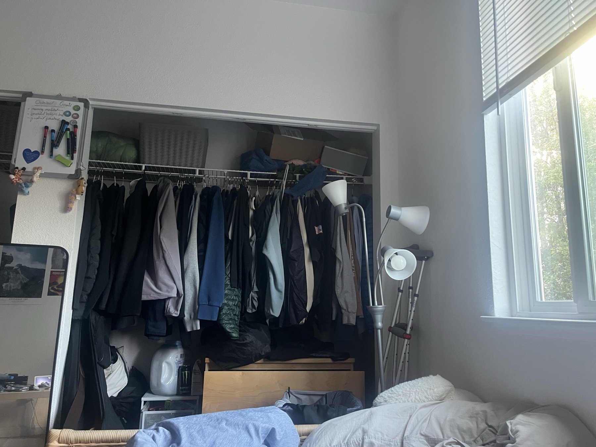
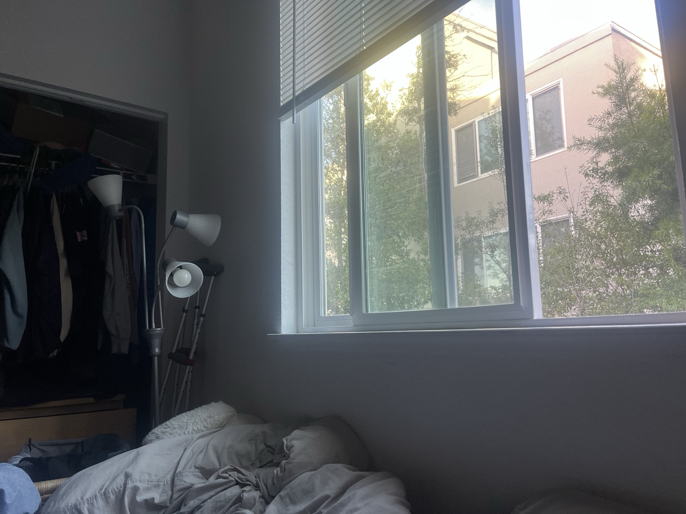
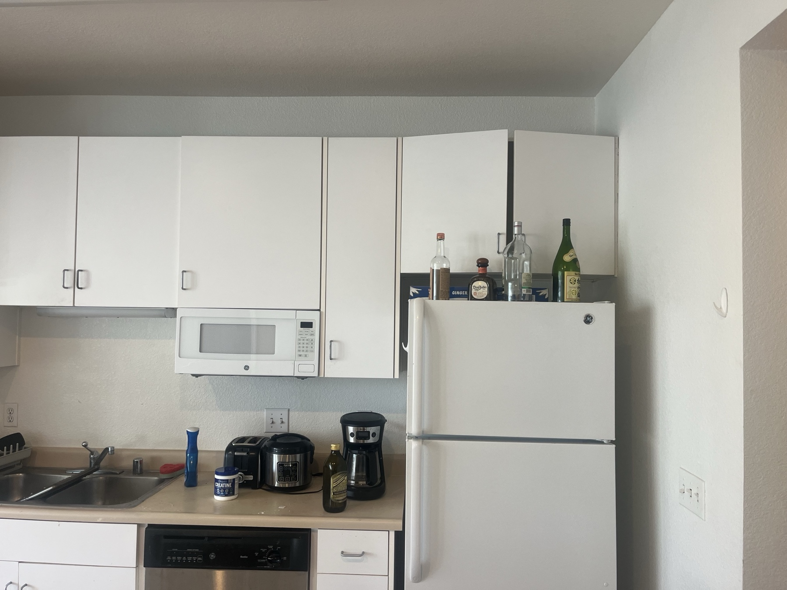
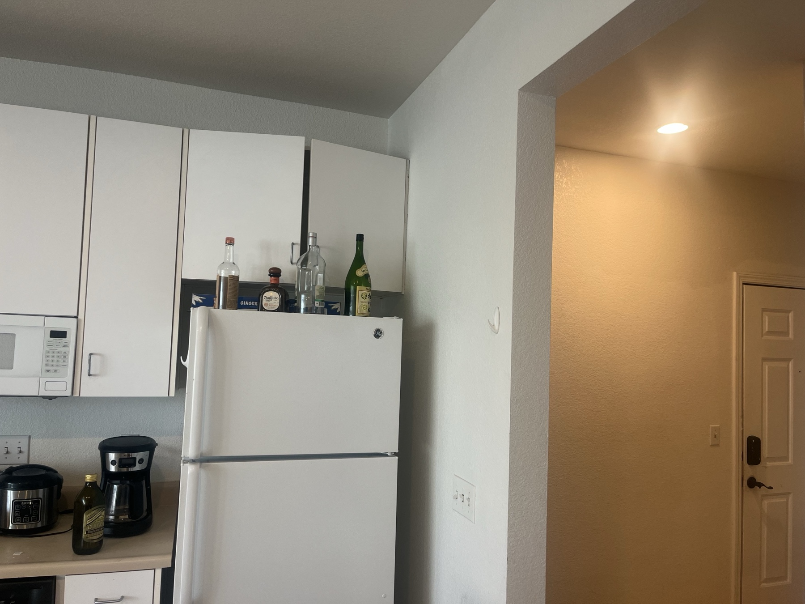
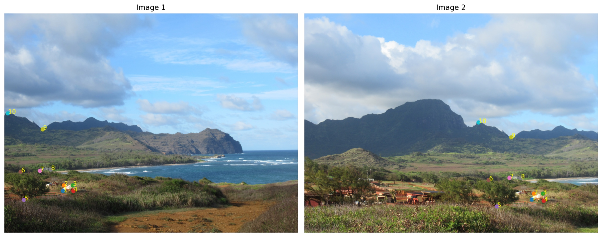
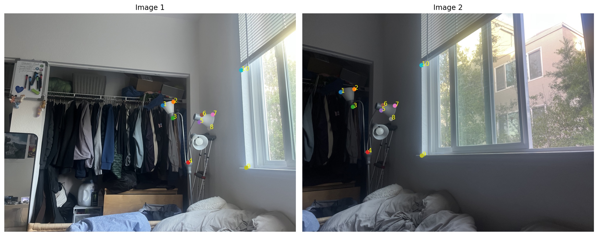
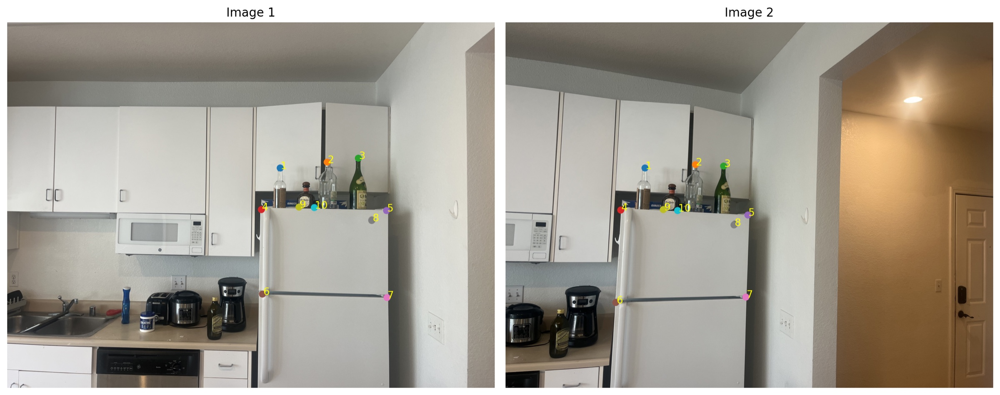
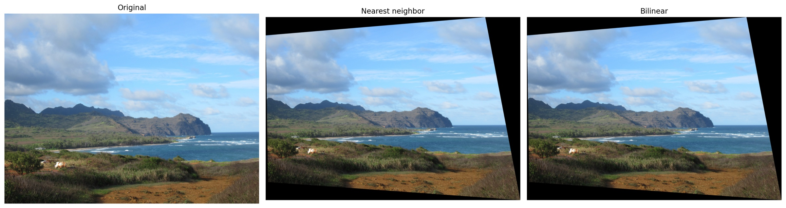
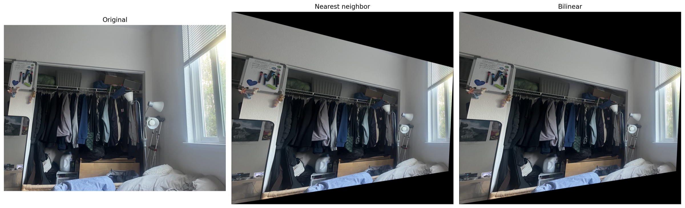
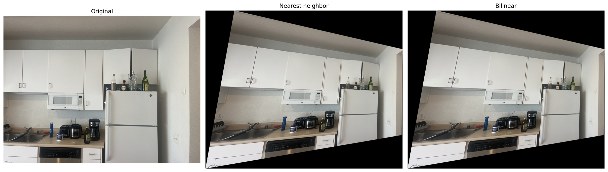

Hawaii


Overlapping coastal views with shared ridgelines, trees, and buildings.
Project 4 · Part A
From overlapping photographs to projective alignment: selecting correspondences, recovering homographies, and resampling images.
These three photo pairs share overlapping scene features that can be matched to estimate a projective transformation.
Overlapping coastal views with shared ridgelines, trees, and buildings.


Overlapping room views with shared closet, window, and furniture details.


Overlapping kitchen views with shared cabinets, appliances, and countertop details.
For each pair, I manually select ten corresponding points. A 3 × 3 homography maps image 1 coordinates (x, y) to image 2 coordinates (u, v), with h₃₃ fixed to 1.
u = (h11 x + h12 y + h13) / (h31 x + h32 y + 1)
v = (h21 x + h22 y + h23) / (h31 x + h32 y + 1)
For each match (x, y) → (u, v):
[x y 1 0 0 0 -ux -uy] h = u
[0 0 0 x y 1 -vx -vy] h = v
h = [h11 h12 h13 h21 h22 h23 h31 h32]ᵀ
Ah = b; A ∈ R^(20×8), b ∈ R^20
h = numpy.linalg.lstsq(A, b, rcond=None)[0]Ten matches give an overdetermined system with twenty equations and eight unknowns. Least squares minimizes the squared algebraic residual. The matrices and point downloads below use the original image coordinates; the website previews are resized for display.

[ 7.4039148227e-01 -6.6599454613e-02 2.9909653307e+03 ]
[-8.4735119675e-02 8.2851296578e-01 3.8042532423e+02 ]
[-3.6306807600e-05 -2.6681031968e-05 1.0000000000e+00 ]Saved data: point coordinates · A matrix · b vector · homography

[ 1.8555513999e+00 -4.4553509378e-02 -3.1952919743e+03 ]
[ 3.7233939277e-01 1.6262975716e+00 -1.2592926367e+03 ]
[ 2.1744301540e-04 1.4558091020e-05 1.0000000000e+00 ]Saved data: point coordinates · A matrix · b vector · homography

[ 1.7500473493e+00 -1.3932748748e-01 -2.1874744239e+03 ]
[ 3.5403453426e-01 1.3535988465e+00 -7.6018213169e+02 ]
[ 1.9496961299e-04 -4.5949227857e-05 1.0000000000e+00 ]Saved data: point coordinates · A matrix · b vector · homography
Both implementations use inverse warping. I transform the source image’s four corners to determine the output bounds, then map each output pixel back through H⁻¹. Coordinates outside the source image remain black.
[xs, ys, w]ᵀ = H⁻¹ [xout, yout, 1]ᵀ
(x, y) = (xs / w, ys / w)
Nearest neighbor: sample at (round(x), round(y)).
Bilinear: x0 = floor(x), y0 = floor(y)
dx = x - x0; dy = y - y0
I(x, y) = (1-dx)(1-dy) I[y0, x0]
+ dx(1-dy) I[y0, x0+1]
+ (1-dx)dy I[y0+1, x0]
+ dx dy I[y0+1, x0+1]At the final source row or column, neighbor indices are clamped to the image boundary. Nearest-neighbor and bilinear interpolation are implemented directly in warpImageNearestNeighbor and warpImageBilinear.



| Method | Sampling work | Image quality |
|---|---|---|
| Nearest neighbor | One source pixel per output sample; less interpolation work. | Preserves individual source values but can introduce jagged edges and aliasing. |
| Bilinear | Four source pixels and a weighted average; more interpolation work. | Smoother edges, with some softening of fine detail. |
Both methods produce the same projective geometry. Their sampling differences are subtle at this display scale; interpolation does not correct inaccurate point matches or parallax. The speed comparison above describes computational work, not measured runtimes.
The examples above demonstrate registration between photographs. Separate fronto-parallel rectification examples of two rectangular objects are not included in the current results.